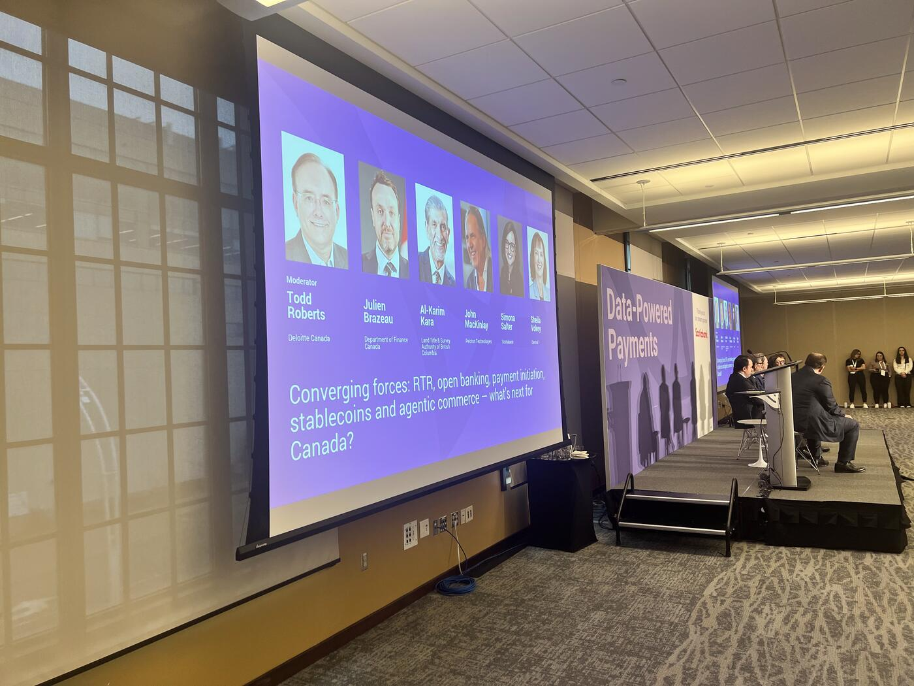
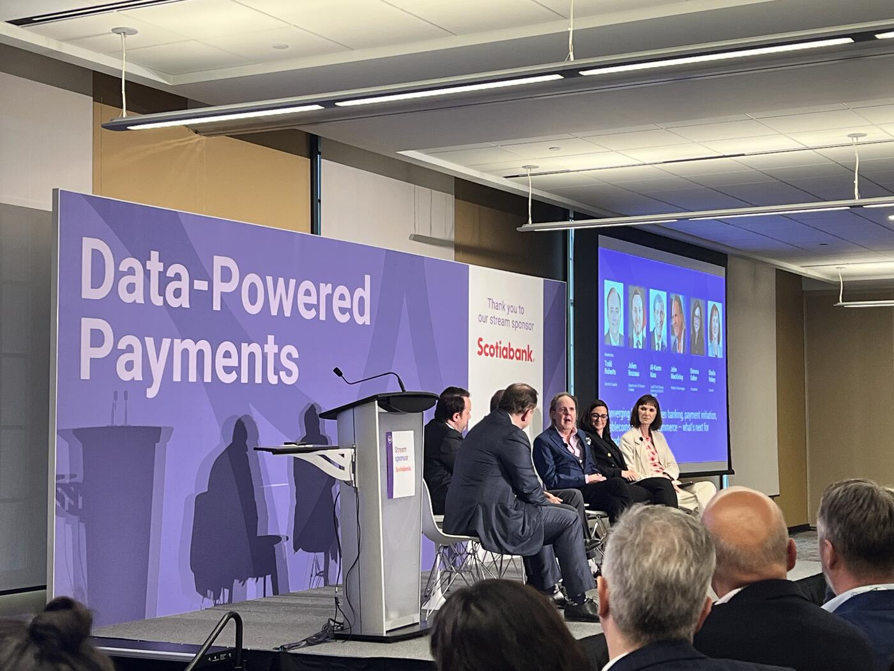

Framing: Convergence at the Infrastructure Level
The "Converging Forces" panel framed the future of Canadian payments not as a single technology shift, but as the convergence of infrastructure, trust, identity, and user experience:
- Real-Time Rail (RTR)
- Open banking
- Payment initiation
- Stablecoins and tokenized money
- Agentic commerce → autonomous AI-driven transactions and machine-to-machine commerce
What's especially significant is that this conversation is no longer happening only inside crypto or AI circles. It's now being discussed at the institutional infrastructure level across banks, regulators, payment networks, and national payment modernization stakeholders — a strong signal that programmable payments, trusted digital identity, and autonomous transaction orchestration are moving into mainstream financial infrastructure conversations in Canada.
"Hyper-Focused on Adoption"

One speaker emphasized that the industry should remain "hyper-focused" on adoption rather than technology for its own sake. Three priorities anchored the discussion: creating certainty and safety, designing intuitive experiences for consumers and businesses, and generating ongoing value through data. Without widespread adoption, "everything that we've been talking about the last couple of days" would ultimately not matter. The emphasis was on making open rails and next-generation payment systems feel invisible and useful to ordinary Canadians through human-centric design.
John MacKinlay: Fintech, Data, and the Screen-Scraping Era
John MacKinlay shifted the discussion toward fintech innovation and market readiness, praising the Canadian government's growing focus on innovation and "leveling the playing field."
He recalled the inefficiencies of older approaches to financial data access, noting that one company he worked with relied on screen scraping, which "would go wrong like 50% of the time."
He strongly defended consumer ownership of banking data:
"Your data is your data. It doesn't need to be replicated on another source, but you should have access and free will to use your data as you wish."
Better data portability and open banking infrastructure, he argued, would create new payment experiences while allowing consumers to remain largely unaware of the underlying complexity. Success depends on giving users "the right payment solution for the right situation" through well-designed interfaces rather than exposing them to technical details of the rails.
Al-Karim Kara (LTSA-BC): Real Estate as the Use Case

Moderator Todd Roberts introduced Al-Karim Kara from the Land Title & Survey Authority of British Columbia, calling the organization's work potentially "one of the first in the country or maybe even the first in the world type opportunities" for combining highly secure payments, identity, and customer-centric digital infrastructure.
Kara opened humorously by admitting he was "not a payment nerd" — joking that he had relied on ChatGPT to understand many of the acronyms used at the summit. But he quickly grounded the discussion in a massive economic reality: Canada's real estate market.
- British Columbia alone: ~$75 billion of Canada's roughly $300 billion annual real property market.
- Home purchases are typically the largest financial transaction Canadians make in their lifetimes.
- Despite years of digitization, the closing process remains fragmented — digital systems, paper workflows, phone calls, manual handoffs, and physical cheque deliveries.
Kara described the current process not as a "value chain" but as a "friction chain":
"Some of that friction protects trust, but much of it is pure drag."
The core problem: "There is currently no end-to-end owner of money, data, and authority."
He shared the LTSA's progress:
- ~99% of core registrations are now online
- 70% of residential real estate transactions are fully automated
- Verified transaction systems use digital identity credentials and BC Services Cards to validate property owners and professionals
But the final step — synchronized movement of money, authority, and registration — remains unresolved.
"RTR gives us this opportunity to be able to take the money with the data and the signal that a land registry can provide authorities and make this happen."
He warned that speed alone isn't enough:
"Speed works, but only when we have verified actors and when you have controls and you have traceability."
Innovation AND Safety — Not Or
A major theme: innovation, safety, and regulatory compliance are no longer competing priorities.
Roberts framed it as a "dual mandate" — innovate while staying secure and compliant — and described the challenge as a collective responsibility involving regulators, banks, fintechs, infrastructure operators, and technology providers:
"It's a big village that has to work together to bring this value forward."
Simona Salter (Scotiabank) rejected the notion that innovation and safety are opposites.
"The key word is and. It has to be both."
She described how Scotiabank has been restructuring internal teams to eliminate traditional organizational handoffs between product, development, compliance, and risk. Everyone is expected to understand regulatory realities and future policy directions from the beginning of the design process.
She highlighted Scotiabank's "Fired Up for Service" initiative, launched through the bank's Experience Management Office in fiscal 2025, which focuses on fixing "broken service journeys" experienced by customers. Examples:
- Real-time scam alerts
- Predictive payment nudges
- Secure data-sharing experiences tied to open banking
Salter emphasized that trust remains the central behavioral driver behind adoption and pointed to a striking durability of legacy behavior:
"Canadians still go into branches to do a bill payment."
"They want the security to know that it's been done."
The future of adoption depends not only on technical capability, but on behavioral science, storytelling, and visible trust mechanisms around new payment systems.
Julien Brazeau: Stability vs. Innovation Is Outdated
Julien Brazeau argued the longstanding debate between stability and innovation is becoming outdated.
"The risk is that our sector doesn't innovate and becomes stagnant."
He described the federal government's evolving approach to policymaking as increasingly adaptive — sandboxes where innovation can emerge under observation while regulators learn alongside industry participants.
On liability, he flagged that responsibility cannot rest solely with banks:
"It's not just the financial institutions, it's the telecoms, it's the platforms."
"No End-to-End Owner"
Kara reinforced the central operational truth:
"There is no end-to-end owner of this process."
The LTSA is leading collaborative work around shared data standards because "nobody's going to give up control of their feed." Instead, every participant must work from a shared understanding of the transaction lifecycle.
He warned about a new operational pressure:
"Real-time risk turns things faster."
That acceleration makes collaboration even more critical across participants who must jointly manage fraud, trust, verification, and transaction integrity in real time.
Sheila Vokey: "A Rising Tide Lifts All Boats"
Sheila Vokey described collaboration as foundational to the model Central 1 was built upon.
"A rising tide lifts all boats."
Pooling talent, investment, and infrastructure is the only practical way to deliver innovation at national scale while keeping it affordable for smaller institutions. She emphasized that fintechs often enjoy working with Central 1 because they're "used to working in complexity with a diverse group of clients."
Her north star:
"You don't want Canadians to know about the rails. It just has to work."
What Should Canadians Feel a Year From Now?
Roberts asked each panelist what Canadians should tangibly feel one year from now.
Brazeau: Canada is "on the precipice" of major frameworks finally becoming operational. "Now is the time to execute."
Kara focused on one very human outcome:
"Canadians will feel the difference if we take the stress and uncertainty out of closing day."
His vision: synchronize payments, registration, and verification systems so that buyers, legal professionals, and financial institutions experience a seamless, predictable closing process.
Another speaker hoped that by next year, conversations would shift away from theoretical frameworks toward real deployments:
"We're talking about what did we launch, who's using it, and why is it just awesome."
The Agentic Commerce Question
The panel then moved into audience questions, where the discussion became especially relevant to agentic commerce.
An audience member raised a sophisticated question about how financial institutions should balance foundational modernization work against the rapid emergence of agentic commerce and AI-driven decision-making systems.
Historically, banks retained control over financial decision-making even when customer experiences evolved through fintech platforms or Big Tech interfaces. Agentic commerce changes that dynamic because both the customer interface and the decision-making layer may increasingly happen outside traditional banking ecosystems.
The question highlighted growing industry tensions:
- How should incumbents distinguish hype from meaningful signals?
- How should institutions focus on foundational infrastructure while AI and agentic systems evolve at extraordinary speed?
- How can financial institutions remain relevant if autonomous systems begin making purchasing and payment decisions independently?
The "And" Philosophy
Roberts framed the tension between national financial systems and global alternatives — noting that organizations like SWIFT are increasingly competing with decentralized, digitally native solutions built on crypto, stablecoins, and programmable infrastructure.
The audience question focused on a balancing act:
- How can institutions continue building foundational infrastructure and regulatory systems,
- while simultaneously preparing for a radically different future that may arrive much faster than expected?
Salter:
"It's not an either or, it's an and."
"The change has never been as fast."
She explained that Scotiabank is trying to position itself "a few steps before" customers are ready for new experiences, while still remaining grounded in current realities around security, regulation, and trust.
"These things don't happen in silos."
Brazeau on the policy lens:
"It is a very noisy space."
He described modern policymaking as "intellectually exhausting" — regulators don't have all the answers and increasingly rely on consultation and direct dialogue with industry to identify pinch points, emerging risks, necessary guardrails, and innovation obstacles.
MacKinlay on culture:
"Historically, banks, the culture is risk management."
Creating a culture of innovation requires visible commitment from senior leadership, particularly bank CEOs.
The Significance
The panel was no longer debating whether technologies like agentic commerce, digital assets, interoperable payment systems, or AI-driven financial interactions might become important. The discussion had shifted toward:
- How quickly they are arriving
- How institutions can remain flexible
- How regulators and incumbents can evolve without sacrificing trust and stability
These concepts have moved from speculative innovation into mainstream strategic conversations inside Canada's financial infrastructure ecosystem.
Key Takeaways
- Convergence theme: RTR + open banking + payment initiation + stablecoins + agentic commerce — discussed at the infrastructure level, not in silos.
- Screen-scraping era: "It would go wrong like 50% of the time."
- British Columbia represents ~$75B of Canada's ~$300B real property market.
- LTSA: 99% of core registrations online, 70% of residential transactions automated — but money + authority + registration still aren't synchronized.
- Real estate closing is a "friction chain," not a value chain.
- "There is no end-to-end owner of this process."
- Scotiabank's "Fired Up for Service" (FY2025): real-time scam alerts, predictive payment nudges, secure open-banking data sharing.
- Canadians still go to branches to pay bills — proof that trust, not technology, drives adoption.
- Liability question reaches beyond banks: telecoms and platforms.
- Bank culture's deep risk-management DNA is now a competitive liability for innovation.
- "A rising tide lifts all boats" — Vokey's frame for the credit union ecosystem.
- One year from now: "Now is the time to execute" (Brazeau) and "take the stress out of closing day" (Kara).
- Salter's mantra: "It's not an either or, it's an and. The change has never been as fast."